This screen is used to import packages and deploy / undeploy applications. The following shows an example of the Deployment Screen:
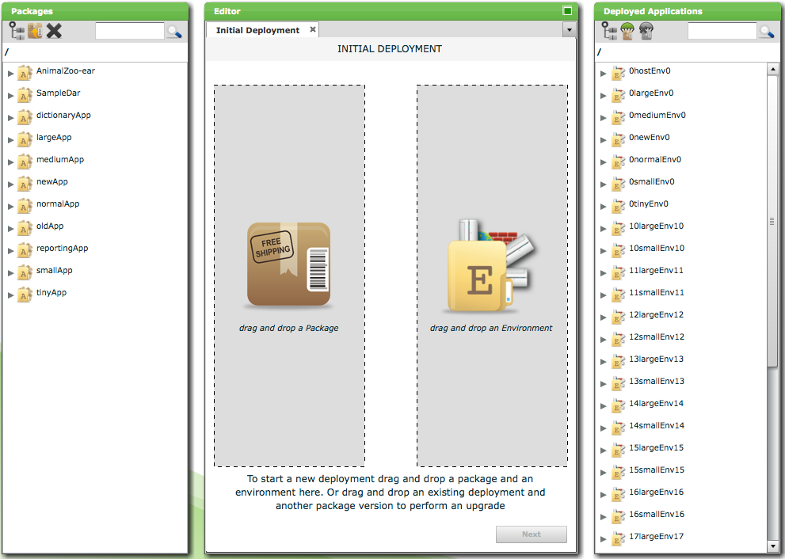
The screen consists of the following components:
The Package Browser is used to import and select deployment packages in Deployit.
The following is a snapshot of the Package Browser:
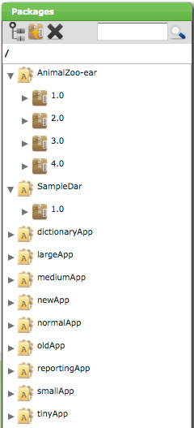
Deployment packages are grouped by the application they contain. In the above snapshot, there are four versions of the AnimalZoo-ear application and one of the SampleDar application. When importing a deployment package for an application that does not yet exist, Deployit automatically creates the application for you.
If the list of packages is longer than can fit on one screen, the Package Browser will display one screen of packages and a scrollbar. If you drag the thumb down to the bottom of the scrollbar, the Package Browser will retrieve and display the next screen of packages.
The Package Browser has the following toolbar:
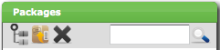
It contains the following controls:
The content of the Package Browser can be searched by typing text in the search box and pressing Enter or clicking on the magnifying glass. The Package Browser will show only those entries matching your search string (either as a complete match or a substring). Note that only the top-level of the entities in the Package Browser is being searched. If you want to search for entities that are not at the top-level (for instance, searching for a particular deployment package version of the AnimalZoo-ear in the situation shown above), restrict the scope of the Package Browser to AnimalZoo-ear and then apply search (see below).
Deployit can contain many applications and deployment packages. To quickly locate a particular deployment package, the scope of the Package Browser can narrow the scope of the data being shown. For example, after selecting the AnimalZoo-ear application and clicking the Set Browser Root button, the Package Browser shows the following:
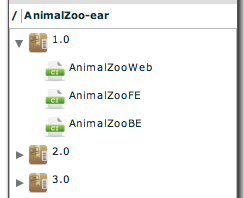
Using the Search box it is possible to search for a particular deployment package version.
By double-clicking on the deployment package with version 1.0, the Package Browser shows the following:
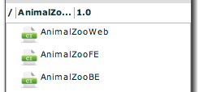
Using the Search box it is possible to search for a particular member of this deployment package.
Also note the breadcrumbs shown above the deployment package tree. When navigating the tree, the breadcrumb trail can be used to navigate back to higher levels.
The Deployment Tab is used to configure and execute deployments.
When starting a new deployment, the Deployment Tab looks like this:
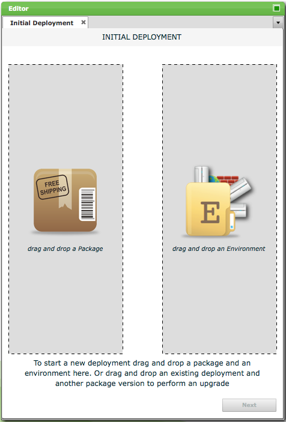
This is the Deployment Configuration page. It contains two areas that need to be filled in to create a deployment. The left half of the tab requires a deployment package and the right half an environment or deployed application. Once both are in place, deployed items can be created and configured after which the deployment can start.
If you drag an environment into the right half of the Deployment Configuration page, Deployit will create an initial deployment. The following picture shows an example.
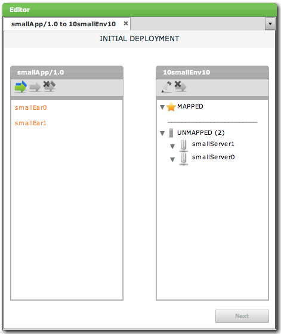
The left box shows the deployables that are part of the deployment package, smallApp/1.0. Both artifacts are colored orange, indicating that they have not yet been mapped to a target container. The right box shows the selected environment, 10smallEnv10. The environments middleware, two servers, are shown in the UNMAPPED section of the box. Once an artifact or middleware resource is mapped to a target server, the server moves to the MAPPED section.
If you drag a deployed application into the right half of the Deployment Configuration page, Deployit will create an upgrade deployment. The following picture shows an example.
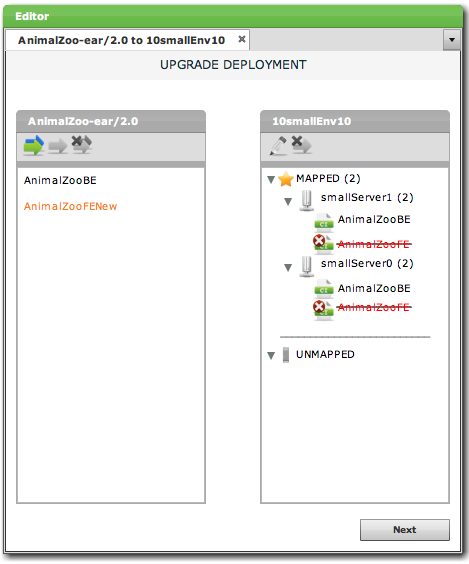
The left box shows the deployables that are part of the deployment package, AnimalZoo-ear/2.0. One artifact is colored orange, indicating that it has not yet been mapped to a target container. The right box shows the selected deployment, AnimalZoo-ear/1.0 on 10smallEnv10. The deployed items for AnimalZooBE are reused from the previous deployment. Artifact AnimalZooFE that was present in the previous deployment, is now missing from the current deployment package and therefore stricken out.
Depending on your deployment, you may need to create and configure deployed items. In the case of an initial deployment, this is a requirement. For upgrade deployments, most mappings will be inherited from the previous deployment. When the package has only code changes and no structural changes (no artifacts or resource specifications added or removed), the upgrade deployment can proceed immediately.
The following image shows an example of the Deployment Tab when adding and removing deployeds.
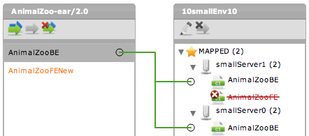
When selecting a package member on the left, lines are shown to indicate where this member has been targeted to.
Adding a Deployed Item
To add a deployed item, drag the deployable from the deployment package in the left hand box to the target container in the right hand box. A new deployed will be created which can be edited in an editor component.
The toolbars in both boxes can also help. This is the toolbar in the package box:
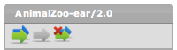
It contains the following buttons:
This is the toolbar in the deployment target box:
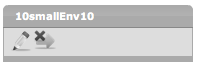
It contains the following buttons:
To configure a deployed item, double-click it in the target box of the deployment tab. The Deployed Item Configuration balloon is shown:
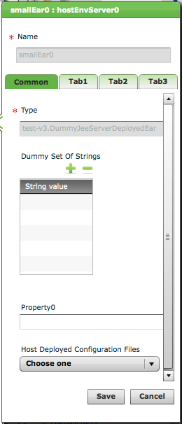
In this window, all properties of the deployed item can be edited. This includes primitive properties (strings, integers), lists of values, (collections of) references to other CIs and placeholders to be replaced in deployed files. The window can contain multiple tabs for different types of properties. The balloon can be maximized by clicking in the top right corner of the editor component. Any changes made to the deployed item can be saved or cancelled.
The actual properties that can be edited depend on the deployed item being edited. Typically, these are provided by one of Deployit's plugins. For more information about the plugins, see the Plugin Manual for the specific plugin.
The Next button at the bottom of the deployment tab submits the deployment to the server and requests Deployit to generate a steplist to perform the particular deployment. Deployit validates the deployed items and their configuration and reports any errors it finds. If all deployed items are correct, the Steplist Page is shown.
When Deployit has generated a steplist, the Deployment Execution page appears. This is an example:
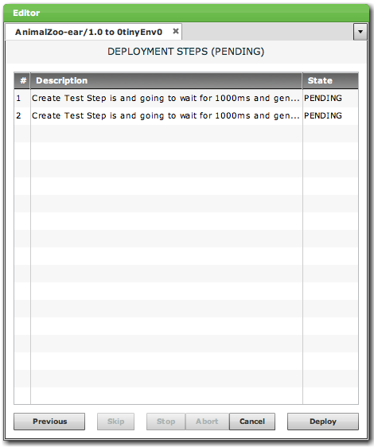
As shown in the example, all steps to be executed to perform the deployment are shown in order. Each step lists a step sequence number, description and the state (PENDING, SKIPPED, EXECUTING or FAILED).
Before starting a deployment, the steplist can be modified if the current user has the required permissions. Step order can be adjusted by selecting a step and dragging it to a new place in the steplist.
The following buttons are shown at the bottom of the screen:
Once the deployment is running, the log for every executed step will be shown in the log window.
After the deployment finishes, the tab can be closed using the Close button.
The Application Browser is used to display deployed applications in Deployit.
The following is a snapshot of the Application Browser:
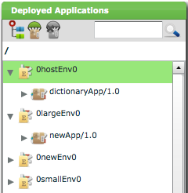
Deployment applications are grouped by the environment they are deployed on. In the above snapshot, the 0hostEnv0 environment contains deployed application dictionaryApp/1.0.
If the list of environments is longer than can fit on one screen, the Application Browser will display one screen of environments and a scrollbar. If you drag the thumb down to the bottom of the scrollbar, the Application Browser will retrieve and display the next screen of environments.
The Application Browser has the following toolbar:
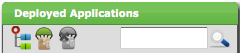
It contains the following controls:
The content of the Application Browser can be searched by typing text in the search box and pressing Enter or clicking on the magnifying glass. The Application Browser will show only those entries matching your search string (either as a complete match or a substring). Note that only the top-level of the entities in the Application Browser is being searched. If you want to search for entities that are not at the top-level (for instance, searching for a particular server that the application is deployed on), restrict the scope of the Application Browser to AnimalZoo-ear and then apply search (see below).
To quickly locate a particular deployment application or item, the scope of the Application Browser can narrow the scope of the data being shown. Select a deployed application and click the Set Browser Root button. For a more thorough explanation, see the Package Browser above.